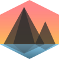

This is a tech demo displaying topographical models for AR viewing.
The intention is to integrate this into  CubeTrek,
a web service to display and analyze GPS tracks of your adventures.
Below are a couple of examples making use of Model-Viewer, which in turn uses Scene Viewer and ARCore on compatible Android devices, and Quick-Look and ARKit on compatible iOS devices.
If your device has AR capabilities, a small button will appear next to the 3D models below. Click it to show the models in your space.
The mountainous area around Chur, the capital of Grisons centered on Montalin. Texture is a Swisstopo styled map.
Large active stratovalcano raising 4392 m.a.s.l. Texture is satellite imagery.
Island group in French Polynesia, centered on Mt. Otemanu, a 727m dormant volcano. Texture is from Google Maps. Elevation is heavily exaggerated.
WebXR Example displaying the Montalin model using Babylon.js.
Only works on WebXR compatible devices, i.e. recent Android phones.
Map Data Courtesy of © MapTiler; Bora Bora texture from Google Maps.
Elevation Data Courtesy of © NASA SRTM V003